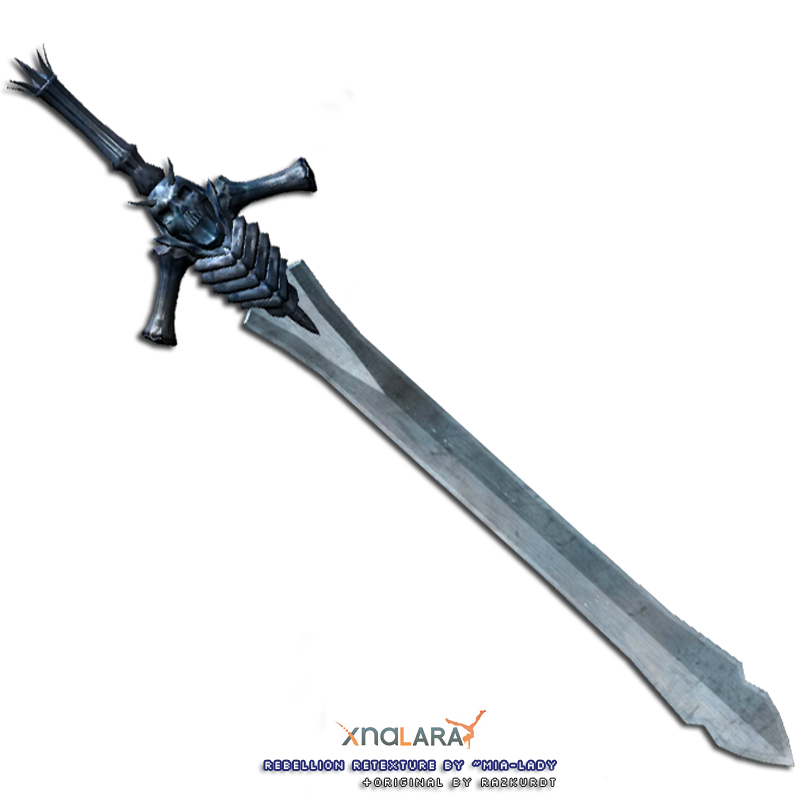
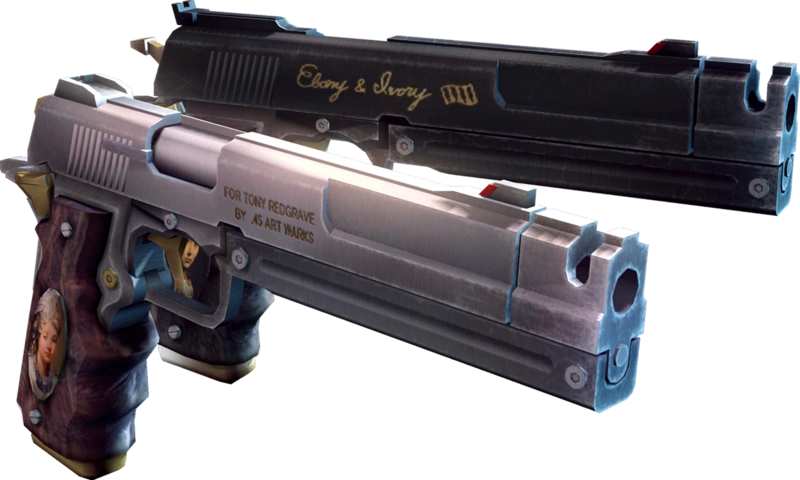

Dante
Dante is one of the main protagonists of the Devil May Cry franchise, and the main playable character for the majority of the games in the series.
Sword that is used by Dante
Pistols that are used by Dante
A year after his last encounter with Vergil, Dante is visited in his yet-to-be-named shop by an associate of Vergil's named Arkham. Arkham offers Dante an invitation to the Temen-ni-gru on behalf of Vergil; as soon as he leaves, Dante is attacked by a swarm of hell jailers. Dante effortlessly kills them all, and heads to the tower in search of an "interesting time".
Vergil's plan is to reopen the portal to the demon world in order to obtain his father's power, in the form of the Force Edge, the weapon imbued with Sparda's power. Within the tower, Dante encounters the demon Jester, who guides him through the tower for his own reasons. He also encounters the demon huntress Lady, who seeks revenge against her father Arkham for his murder of her mother. Lady dismisses Dante as just another demon and attempts to kill him.
Dante is forced to fight his way through the demonic gatekeepers guarding the various parts of the tower. Upon defeating most of these demons, Dante acquires their souls in the form of new weapons and combat styles. Dante fights his way to the top of the tower, where Vergil awaits him. The two fight, with Vergil maintaining the upper hand. Vergil questions why Dante refuses to gain the power of their father. Dante scornfully answers that he has no father and declares that he simply doesn't like Vergil. Vergil impales him with Yamato, disappointed in what he views as his brother's foolishness, and once again steals Dante's half of the Perfect Amulet.
Grievously injured, Dante taps into his demonic power in order to rise again. While Vergil wishes to carry on their fight, he is convinced by Arkham to leave. Dante attempts to pursue them but is swallowed by the Leviathan. After fighting his way through the beast and back into the tower, Dante finds the seemingly dead body of Arkham. Lady catches up to him, and angrily accuses him of robbing her of the chance to kill her father after revealing their familial connection. She allows Dante to leave, whereupon Arkham stirs, telling Lady that he was corrupted by Vergil. With his dying words, he begs her to stop Vergil from opening the gate to the demon world.
Having made his way to the lock, an increasingly frustrated Vergil attempts to open the gateway to the Demon World. He believes that he has all that is needed; the blood of Sparda, which runs through his own veins, and the Perfect Amulet, and yet the way will not open. The two fight yet again, this time more evenly, despite Vergil having claimed the powers of Beowulf.
Their battle is interrupted by Lady, who joins the fighting in an attempt to kill Vergil. As the three are exhausted by the fight, Jester suddenly appears. Taking advantage of their weakness, Jester defeats them and reveals himself to be Arkham, having manipulated the three of them in order to claim Sparda's power for himself. Arkham reveals that in addition to his own blood, Sparda sacrificed a mortal priestess to seal the Demon World away. He informs Lady that he has led her here because she is a descendant of that priestess through her mother. He stabs her, and with her blood spilled the tower is unlocked and the way to the Demon World is opened.
In Devil May Cry, Devil May Cry 4, and Devil May Cry 5, his hair is somewhat parted with his bangs brushed down; in Devil May Cry 3 his hair is brushed down with his bangs partially covering his eyes, and in Devil May Cry 2 his hair is much thicker, with his bangs parted in front of his right eye.
This page was created for practice and gaining skills(and to get a mark)
Name of creator
Surname of creator
Insta of creator
Tg of creator